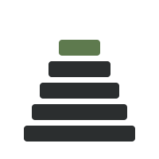
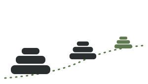
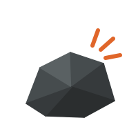

A · Hand-stackedOrganic, slightly tilted stones. Feels hand-built and personal.

B · Split cairnGeometric bars. It's a cairn and also a split chart.

C · VörðurCairns marking the route into the distance. Good for the Leiðin (trends) view.

A · on basaltThe top stone turns lichen green.

B · on basalt
App iconSplit cairn on basalt.
The hidden detail: the cairn is a negative-split run
→
Each stone is one kilometer, and a shorter bar means a faster km. The narrowing cairn is a run where every km gets faster. The top stone (the fastest, final km) is highlighted.
Wordmarks
Splitsmith: the workout builder

Chiseled stoneFaceted stone with ember sparks from the forge. The raw stone before it joins the cairn.
App icon
Side by sideThe same basalt base, with lichen for Varða and ember for Splitsmith.